地政学
ホニアラはソロモン諸島の国会、官庁、港、空港が集まる首都で、ガダルカナル北岸から多島海の国家を束ねます。島間航路、援助、外交、防災、治安がここを経由し、太平洋の小国政治が見える玄関口となり続けます。
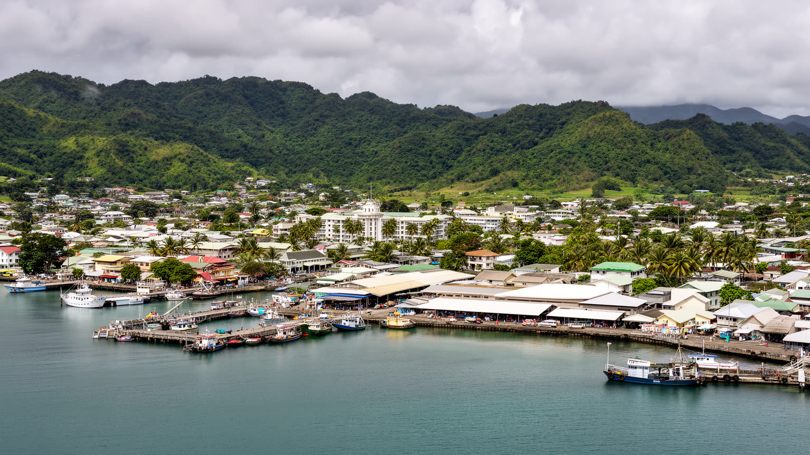
🇸🇧 ソロモン諸島 / ガダルカナル島 / World City Atlas
ガダルカナル島北岸の海岸低地に伸びる首都です。国会、港、中央市場、教会、戦跡、移住者の住宅地、気候リスクが、細い道路と湾岸の生活圏に重なる都市です。
都市の骨格
ホニアラは国の人口と行政機能が集中する玄関であり、ガダルカナルの海岸道路、丘陵住宅、港、空港、中央市場が島嶼国家の政治と生活をつないでいます。
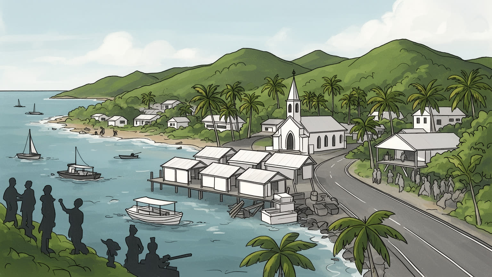
ホニアラはソロモン諸島の国会、官庁、港、空港が集まる首都で、ガダルカナル北岸から多島海の国家を束ねます。島間航路、援助、外交、防災、治安がここを経由し、太平洋の小国政治が見える玄関口となり続けます。
雇用は行政、港湾、建設、商業、露店、漁業、警備、交通、宿泊に支えられます。公務と援助事業の比重が大きい一方、現金収入を求める若者や島外出身者が増え、住まいと仕事の競争が街の緊張を生みます。残る街です。
教会は日曜礼拝、学校、合唱、福祉、政治的対話の場であり、島ごとの言語、親族関係、祭礼を都市に持ち込みます。英語、ピジン、各地の言葉が市場で交わり、キリスト教と慣習が生活を支える基盤となる街でもあります。
旅行者は戦跡、中央市場、港、島巡りを訪れますが、住民には水道、排水、住宅、洪水、交通、医療、物価が日々の条件になります。美しい湾岸の背後に、急速な都市化と気候リスクを抱える生活都市の現実があります。
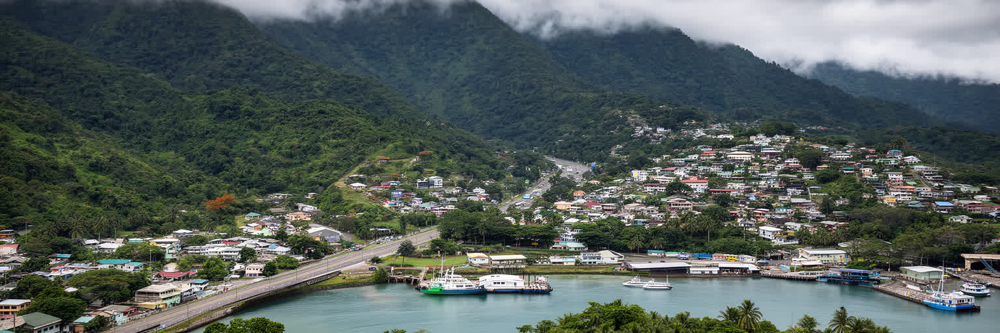
ホニアラの都市形は、ガダルカナル島北岸の細長い海岸低地によって決まります。湾に沿って港、中央市場、官庁、商店、学校、病院が並び、背後の丘へ住宅地と非公式居住地が上がっていきます。平地が限られるため、東西を走る幹線道路に通勤、物流、通学、買い物、空港アクセスが集中し、少しの渋滞や冠水が都市全体の動きを止めやすいです。熱帯の強い雨は短時間で谷を流れ下り、排水路、橋、低地の住宅、海岸のごみ問題を一気に表面化させます。海は都市を外へ開く玄関であると同時に、高潮、浸食、港湾汚染、漂着物を運ぶ境界でもあります。丘陵に住む人々は眺望と安い土地を求めるが、水道、道路、学校、保健サービスへの距離は重くなります。ホニアラを読むには、首都機能だけでなく、狭い地形が生活機能をどう圧縮し、災害時にどこを脆くするかを見る必要があります。港と市場が近い便利さは、道路負荷と土地不足を伴い、都市の成長を常に難しい調整にしています。さらに地形の細さは公共施設の配置にも影響します。病院や学校を増やしたくても安全な土地は少なく、斜面開発を進めれば水害や土砂崩れの危険が増します。中心部を歩く距離は短くても、丘の上の家から水を運ぶ距離は長いです。海岸低地の首都は、便利さと脆さを同じ地図に持つ都市です。この圧縮が首都の個性を強め、都市計画の一つ一つを生活問題に変えます。
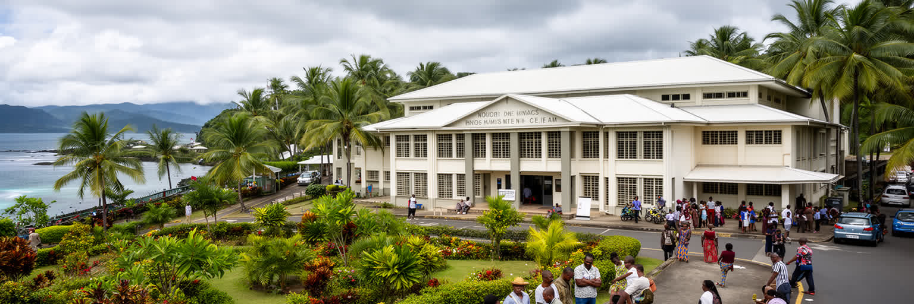
ホニアラは、広い海域に散らばる島々を一つの国家として動かす政治の中心です。国会、首相府、各省庁、裁判所、外国公館、援助機関、警察、港湾管理が集まり、地方から来る議員、職員、陳情者、学生、患者、商人を受け止めます。首都の行政は、国の制度を象徴する一方で、島ごとの距離と不均衡も映します。遠隔州では道路、診療所、学校、通信、輸送費が重い焦点であり、予算と人材がホニアラへ集まりすぎるとの不満もあります。政府機能が集中することで、仕事、教育、医療、情報を求める人々が首都へ移動し、住宅地の拡大と公共サービス不足をさらに押し上げます。外国援助や地域機関との会議はホニアラに国際性を与えますが、住民にとっては道路、電気、水、物価、治安が政治の実感になります。島嶼国家の首都は、巨大な官庁街ではなく、港、市場、教会、集落代表、親族ネットワークと並んで政治を行います。ホニアラの政治性は、国会の建物だけでなく、地方の声をどれだけ生活改善へ変えられるかに表れます。選挙期には島ごとの支持、人脈、雇用期待が首都の会話を濃くし、若者の失業や物価への不満も政治的な熱を帯びります。政策文書が英語で作られても、街ではピジンで解釈され、教会や市場で広がります。政治は官庁の中だけでなく、乗合バスの待ち場や家族の食卓でも語られます。首都の信頼は、こうした日常の説明責任で保たれます。
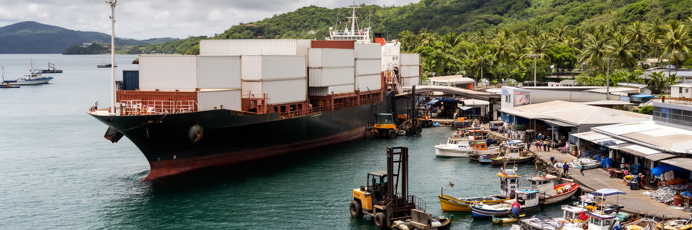
ホニアラ港は、ソロモン諸島の輸入、島間輸送、燃料、建材、食料、消費財を受け止める重要な結節です。コンテナ、沿岸船、漁船、小型貨物、タクシー、露店、荷役労働が湾岸に集まり、港の効率はそのまま物価と生活の安定に影響します。島嶼国家では道路で遠くへ運ぶより、船で島をつなぐことが基本であり、港の遅れは地方の店、学校、診療所、建設現場へ波及します。港湾作業は見えにくいが、荷役、通関、冷蔵、修理、警備、清掃、船員の休息まで多くの仕事を生みます。一方、港の周辺では大型車、騒音、油や廃棄物、海岸の安全、歩行者動線が課題になります。中央市場に並ぶ魚や農産物、建設現場に届くセメント、病院で使う資材も、海上物流なしには成り立ちません。観光客が見る港の風景は穏やかでも、実際には国の消費と公共サービスを動かす緊張した現場です。ホニアラの港を読むことは、島々の距離を縮める技術と、その費用を誰が負担しているのかを読むことでもあります。燃料価格や船賃が上がれば、離島の生活費もすぐに上がります。港の整備は経済政策であると同時に、地方の患者を運び、学校教材を届け、災害時の支援物資を動かす福祉の基盤でもあります。海辺の作業場を都市の表から消さず、住民の安全と両立させる設計が必要になります。港湾の強さは、島々の暮らしを支える静かな公共性でもあります。
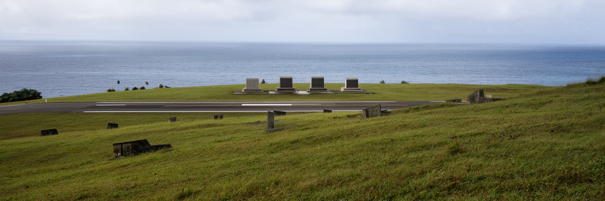
ホニアラ周辺の土地には、第二次世界大戦のガダルカナル戦の記憶が濃く残ります。ヘンダーソン飛行場、丘陵の戦闘跡、海に沈む船や航空機、日米豪ニュージーランドなどの慰霊の場所は、現在の空港や道路、郊外の生活圏と重なっています。戦跡観光は、軍事史への関心を引き寄せるが、そこは観光資源である前に、現地住民が暮らす土地であり、多くの兵士と民間人の死を抱える場所です。道路沿いの記念碑や博物館的な展示だけでは、戦争が島の社会、労働、土地利用、植民地支配、戦後の首都形成へ与えた影響は見えにくいです。ホニアラは戦後に行政中心として発展したため、戦争の破壊と近代的首都の誕生が同じ地層にあります。慰霊を目的に訪れる人、ダイビングを楽しむ人、近くで通学や市場へ向かう住民が、同じ空間を異なる意味で使います。敬意ある戦跡の扱いには、現地の記憶、土地所有、環境保全、危険物への注意を含める必要があります。ガダルカナルの名は世界史に大きいが、その記憶はホニアラの日常の中で静かに続いています。未処理の弾薬や沈船の劣化は安全と環境の問題でもあり、過去は完全に博物館へ収まりません。現地ガイドが語る地名や家族史を聞くと、戦争は外部の大国だけの物語ではなく、島の土地と人々を変えた出来事として見えてきます。静かな追悼を保つことが、旅人にも住民にも必要な礼儀となります。
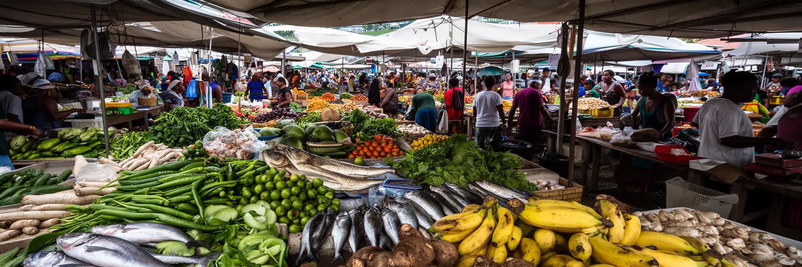
ホニアラ中央市場は、首都の胃袋であり、島々から来る現金収入の窓口でもあります。魚、タロイモ、キャッサバ、バナナ、ココナツ、葉物、果物、ベテルナッツ、手工芸品が並び、売り手の多くは周辺集落や他島との関係を持ちます。市場は買い物の場所であるだけでなく、親族への送金、交通情報、仕事探し、政治の噂、ラジオやSNSの話題、教会行事の連絡が交わる社会空間です。女性の販売労働は家計を支え、農村と都市をつなぐが、長時間の移動、保管設備の不足、衛生、治安、雨天時の売り場、価格変動という負担も抱えます。輸入食品が増える一方で、地元の根菜や魚は食の安全保障を支える重要な基盤です。観光客にとって市場は色彩豊かな見どころですが、住民には毎日の食費を決める場所であり、物価上昇の痛みが最初に見える場所でもあります。市場の混雑やごみを都市の論点としてだけ見ると、そこに集まる小規模生産者と販売者の経済は見落とされます。ホニアラの食を読むことは、港、農村、女性労働、都市貧困が一つの屋根の下で交差する現実を見ることになります。朝早く船やトラックで届く品物は、天候、燃料費、道路状態によって量も価格も変わります。冷蔵や衛生設備が整えば食の安全は高まるが、利用料が上がれば小さな売り手には負担になります。市場の改善は、美観ではなく暮らしの持続性の論点です。毎日の値段が、首都の家計を映します。
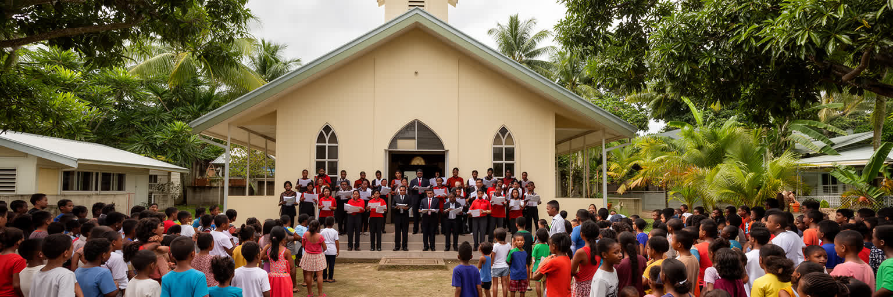
ホニアラの生活で教会はきわめて大きいです。聖公会、カトリック、南海福音教会、ユナイテッド教会、セブンスデー・アドベンチストなどの礼拝堂は、日曜の祈りだけでなく、学校、病院、合唱、青年会、女性会、葬儀、結婚、和解の場として機能します。多くの住民は島ごとの出身地と親族ネットワークを持ちながら都市で暮らすため、教会は新しい近隣関係を作る重要な基盤になります。政治や民族間の緊張が高まった時にも、宗教指導者や教会組織は対話と支援の役割を担ってきました。信仰は公共制度の不足を補う力にもなりますが、福祉や教育を宗教組織に頼りすぎれば、資金や人材の負担は増します。合唱や礼拝の言葉には英語、ピジン、各地の言語が混ざり、都市の多様性が聞こえます。観光地としてのホニアラを歩くだけでは、この信仰のリズムは見えにくいです。日曜朝の服装、教会前の挨拶、葬儀の集まり、学校行事を通して、首都は単なる行政都市ではなく、祈りと相互扶助で維持される共同体になります。教会の存在を読むことは、ホニアラの社会的な安心がどこで作られているかを知る手がかりになります。若者にとって教会は音楽、サッカー、ラグビー、進学相談、結婚相手との出会いの場にもなります。都市化で親族の支えが弱まるほど、礼拝後の食事や寄付、見舞いは生活をつなぐ小さな制度になります。信仰の力は、公共サービスの欠落を隠すためではなく、人々が支え合う回路として理解したいです。
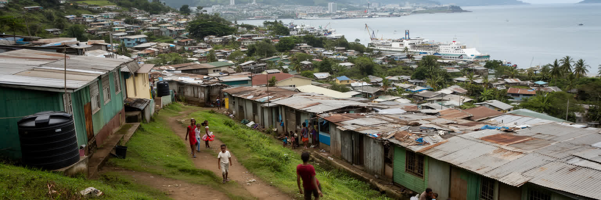
ホニアラの急成長は、仕事、教育、医療、現金収入を求めて島々から人が集まることで進んできました。ですが、正式な住宅供給と土地管理は人口増加に追いつかず、丘陵や川沿い、都市周縁には非公式居住地が広がります。そこでは親族や同郷者の助けで住まいを作る一方、水道、トイレ、排水、電気、道路、学校までの距離、土地権の不安が日常の負担になります。非公式居住を単に違法や貧困として片づけると、住民が首都経済を支える労働者である事実が見えなくなります。市場の販売員、建設作業員、警備員、清掃員、運転手、学生、若い家族は、都市の機能を動かしながら安定した住まいを得にくいです。土地には慣習的所有、国家管理、都市計画、親族関係が重なり、移転や整備は簡単ではありません。洪水や地滑りに弱い場所ほど安く住めるため、災害リスクと貧困が結びつきます。ホニアラの住宅の論点は、首都への人口集中を止めるかどうかではなく、移住者を都市の正式な住民として扱い、生活基盤をどう整えるかにかかっています。住まいの安定なしに、首都の労働力も公共衛生も守れません。子どもが宿題をする明かり、雨の日に通れる道、清潔な水を得る時間は、家族の将来を直接左右します。都市計画が住民を追い出すだけなら、問題は別の斜面へ移ります。土地権の調整、段階的なインフラ整備、住民組織との対話が、成長する首都には欠かせません。
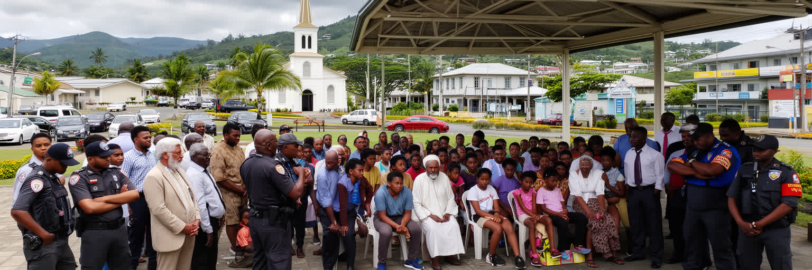
ホニアラの近現代史には、民族間緊張、土地をめぐる不満、移住、治安悪化、国際支援による安定化の経験が刻まれています。ガダルカナルの土地に首都が置かれ、マライタなど他島から多くの人が移り住んだことで、仕事、土地、政治的代表、治安をめぐる摩擦が強まった時期がありました。二〇〇〇年代初頭の暴力と不安は、商業、学校、公共サービス、家族関係に深い影響を残し、その後の地域支援ミッションと国内の和解努力によって秩序が回復していました。ですが、緊張の記憶は完全に消えるわけではなく、失業、若者の不満、住宅不足、政治不信、選挙後の騒乱と結びつくことがあります。ホニアラを平穏な南太平洋の首都としてだけ見ると、この社会的な傷と修復の努力を見落とします。教会、女性団体、地域リーダー、学校、警察、行政は、日常的な対話と信頼づくりを続ける必要があります。治安は武装や警備だけでなく、若者が働けること、住民が土地と住まいに安心できること、地方出身者が排除されないことによって支えられます。首都社会の成熟は、過去の緊張を隠すことではなく、記憶を学びに変え、再び暴力へ戻らない制度と関係を作ることにあります。和解は式典だけでは続きません。学校で互いの島の歴史を学び、市場で隣り合って商売し、警察が公平に対応し、政治家が対立を利用しないことが日常の土台になります。ホニアラの平和は、毎日の小さな信頼の積み重ねで保たれています。
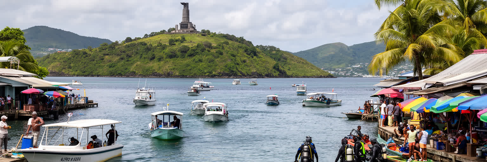
ホニアラ観光は、華やかなリゾート都市とは違い、首都の実生活と周辺の海をつなぐ形で成り立ちます。旅行者は国立博物館、中央市場、戦跡、慰霊地、港、海岸、近隣島へのボート、ダイビング、釣りを組み合わせます。大型ホテルや商業施設は限られるが、その分、街の交通、食堂、市場、教会、港の動きが旅の経験に近くなります。ガダルカナル戦に関心を持つ訪問者、太平洋の島国政治を見たい人、海の自然を楽しむ人では、ホニアラの見え方が大きく違います。観光が地域に利益を残すには、地元ガイド、ボート事業者、手工芸品販売者、宿泊業、保存活動へ収入が回る仕組みが必要です。同時に、戦跡の無断採取、サンゴ礁への負荷、ごみ、文化の撮影、土地所有への無理解は避けなければなりません。ホニアラは観光客を受け入れる玄関であると同時に、住民が通勤し買い物をする生活都市です。短い滞在でも、敬意あるガイド選び、地元店の利用、礼拝や慰霊の場での静かな態度が旅の質を変えます。観光の魅力は、整った舞台よりも、島国の首都が現実に動く姿を近くで見られることにあります。島巡りでは天候、潮、船の安全、燃料、通信を軽く見てはいけありません。旅程に余裕を持ち、地元の判断を尊重することは、自然への敬意であり安全対策でもあります。小さな事業者に直接支払われる観光収入は、家族の学費や船の修理にもつながります。
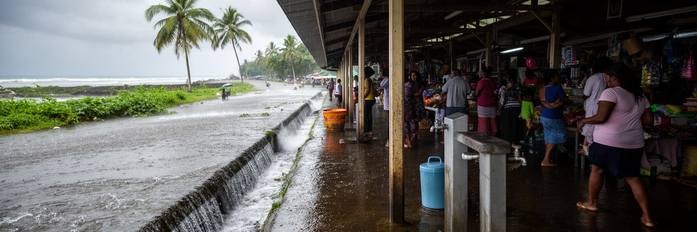
ホニアラの未来を考えるうえで、気候リスクと公共衛生は切り離せません。熱帯雨林気候の高温多湿、強い雨、サイクロンの影響、海岸浸食、高潮、斜面崩壊は、低地の住宅、港、市場、道路、学校、診療所を脅かします。排水が詰まれば冠水とごみが広がり、蚊の発生、下痢性疾患、水質悪化、皮膚病などの健康問題が悪化します。非公式居住地では安全な水、トイレ、廃棄物収集、丈夫な道路が不足しやすく、災害時には被害が集中します。暑さは屋外で働く市場の売り手、港湾労働者、建設作業員、警備員、通学する子ども、高齢者に重くのしかかります。気候適応は、海岸護岸だけでなく、排水路の維持、斜面の土地利用、公共トイレ、ごみ収集、保健情報、早期警報、避難場所、学校の安全を含む都市政策です。国の財政が小さい中で、援助事業と住民参加をどう結びつけるかも重要になります。ホニアラの気候対策は、将来の抽象的な問題ではなく、雨の日に市場へ行けるか、子どもが安全に学校へ通えるかという生活の条件です。暑さと水を管理できるかが、首都の公平性を決めます。海面上昇だけを語ると、今日の排水詰まりやごみ回収の遅れが見えなくなります。気候リスクは遠い未来の海岸線ではなく、豪雨後にバスが止まり、食品が傷み、診療所へ行けなくなる具体的な不便として現れます。身近な衛生改善こそ、適応の第一歩です。
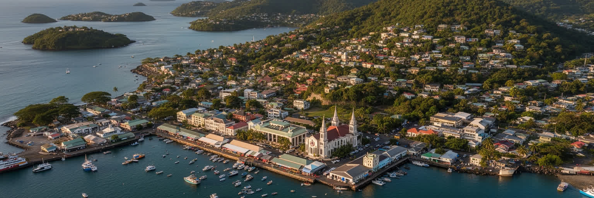
ホニアラは人口やGDPだけで見れば小さな都市ですが、太平洋の島嶼国家が直面する課題を凝縮しています。首都機能、港、空港、中央市場、教会、戦争記憶、移住、非公式居住、民族間の緊張、気候リスクが、ガダルカナル北岸の細い都市空間に重なります。国の制度はここで見えやすくなりますが、地方の島々から来る人々の期待と不満もここに集まります。政府や援助機関が作る計画、港で働く人の一日、市場で売る女性の現金収入、丘陵の住宅地で水を運ぶ家族、教会で歌う若者は、同じ首都の異なる面です。ホニアラを読むことは、南太平洋を楽園のイメージで消費せず、政治、土地、労働、信仰、災害、記憶を持つ現実の都市として見ることです。観光客には短い滞在でも、道路の混雑、港の重要性、市場の物価、教会のリズム、戦跡の静けさが都市の構造を教えてくれます。小さな首都ほど、一つの港、一つの道路、一つの市場、一つの教会が社会全体へ強く響きます。ホニアラの価値は規模の大きさではなく、多島海の国家を日々つなぎ直す粘り強さにあります。世界の大都市と同じ指標で比べるだけでは、この都市の重みは見えません。離島から届く船、役所へ向かう人、売り場を片付ける家族、礼拝後に交わされる相談が、国家の実感を作っています。ホニアラは小さいから重要なのではなく、小さな場所に多くの責任が集中するから重要です。